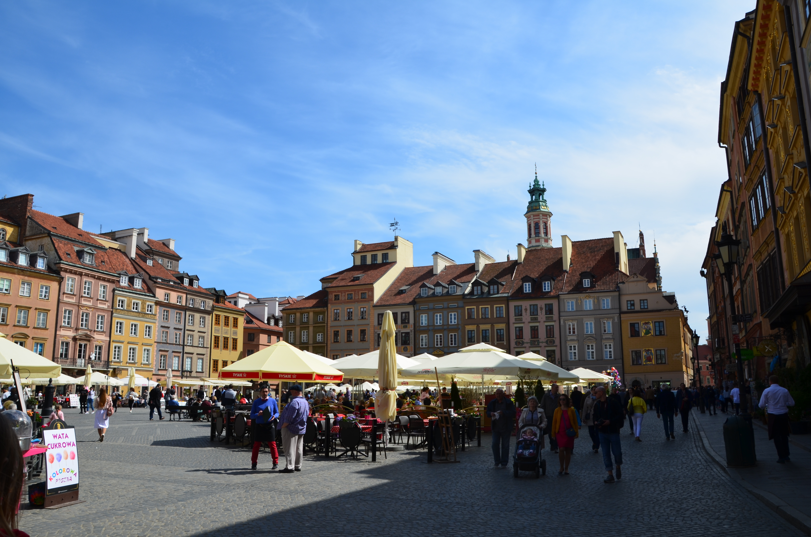

Notre week end de Paques à Varsovie, Pologne
Le vieux Varsovie a disparu dans le désastre de la Seconde Guerre mondiale, c'est donc une ville reconstruite, neuve, mal connue, souvent mal aimée parce que mal comprise. Son architecture moderne déroute. Pourtant, une capitale à taille humaine, peu polluée, plaisante avec des avenues larges et aérées, des grands parcs verdoyants et les rives de la Vistule qui sont restées sauvages et herbeuses. Visiter Varsovie aujourd'hui, c'est assister à quelque chose qui ressemble à des retrouvailles historiques. © Routard
